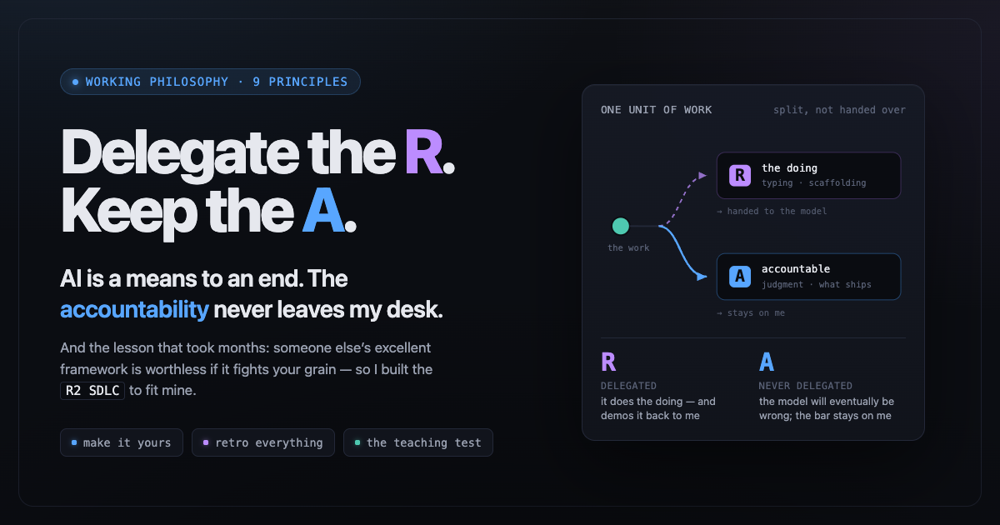
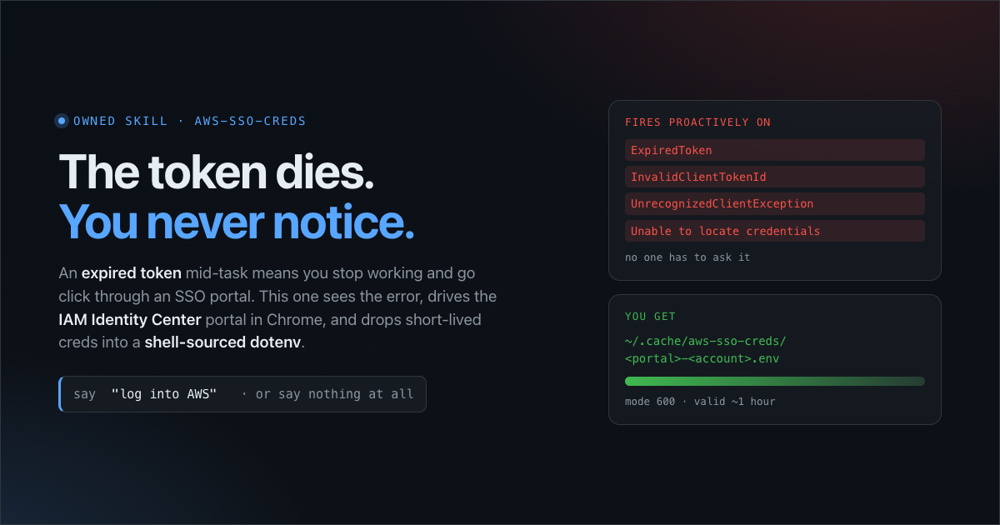
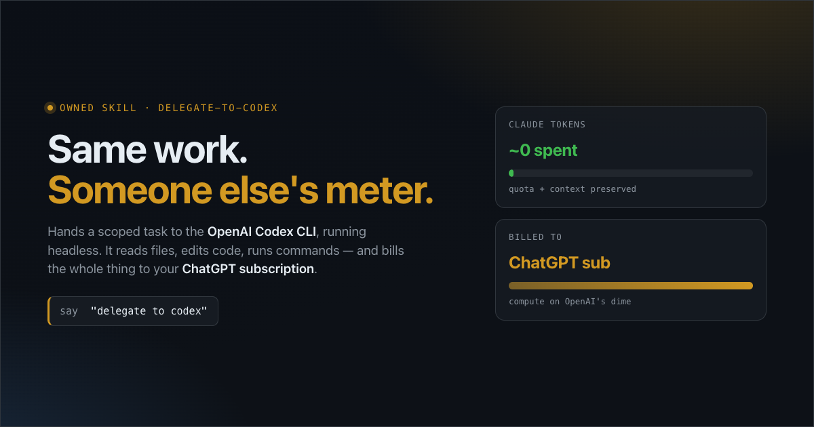
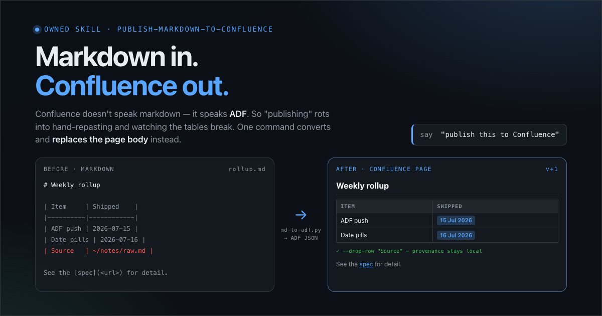
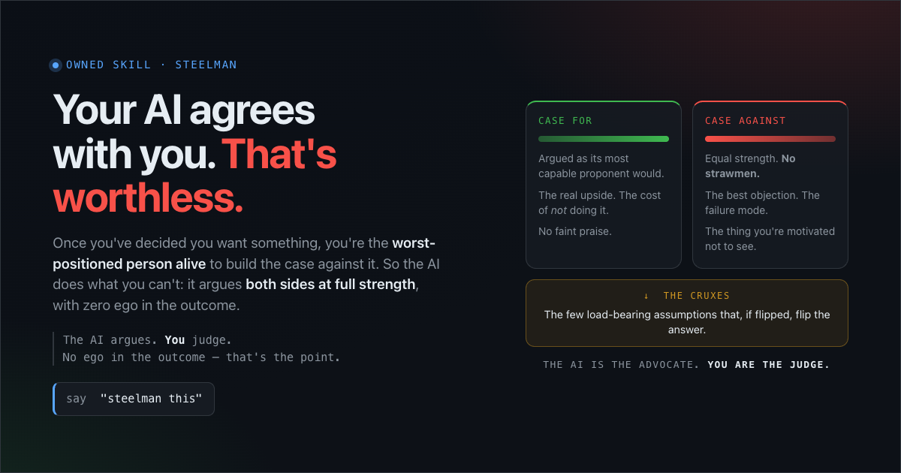
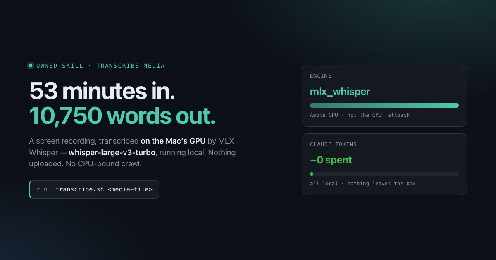
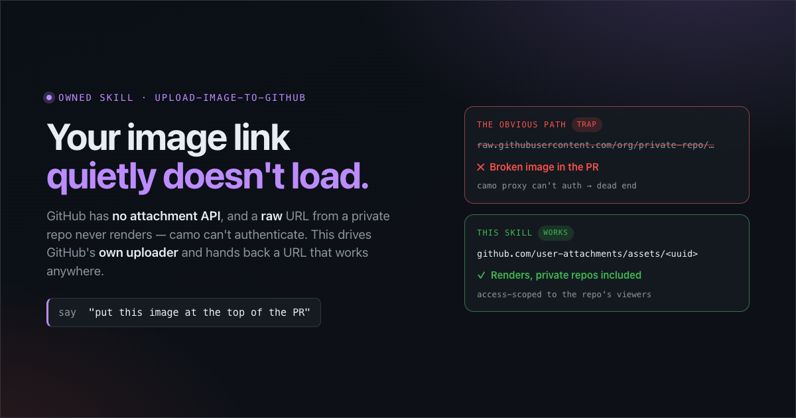
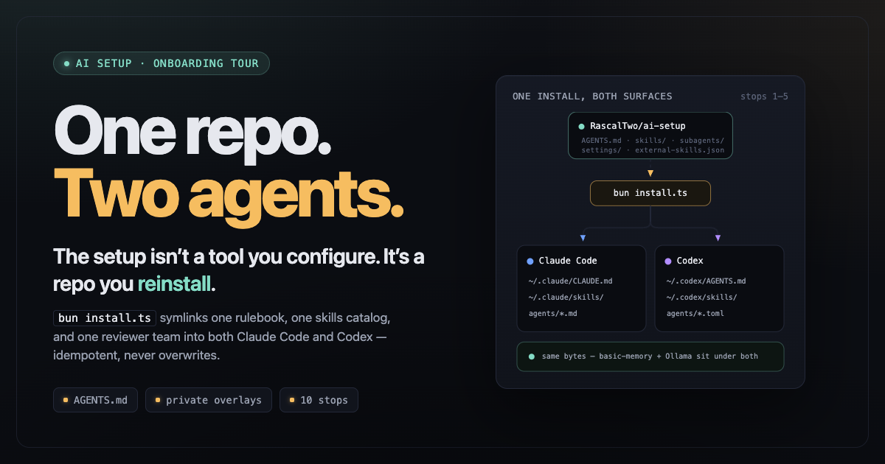

An explorable of Rascal's AI usage philosophy — nine principles, from 'means to an end' to 'teaching is the whole point'.

Catches the expired-credential error itself, drives the IAM Identity Center portal via Chrome, and drops short-lived creds into a shell-sourced dotenv.

Hands a task to the OpenAI Codex CLI headless — billed to your ChatGPT subscription, not your Claude tokens.

One command converts a local markdown file to ADF and replaces a Confluence page body — tables, links, headings and date pills intact.

Argues the strongest case both for and against your decision at full strength, surfaces the cruxes, and hands you the verdict.

The canonical local speech-to-text primitive — Mac-optimized MLX Whisper on the GPU, nothing uploaded, ~0 Claude tokens.

GitHub has no attachment API — this drives its real uploader to hand back a user-attachments CDN URL that renders even in private repos.

An onboarding map for Rascal's agent-agnostic AI setup across Claude Code and Codex.